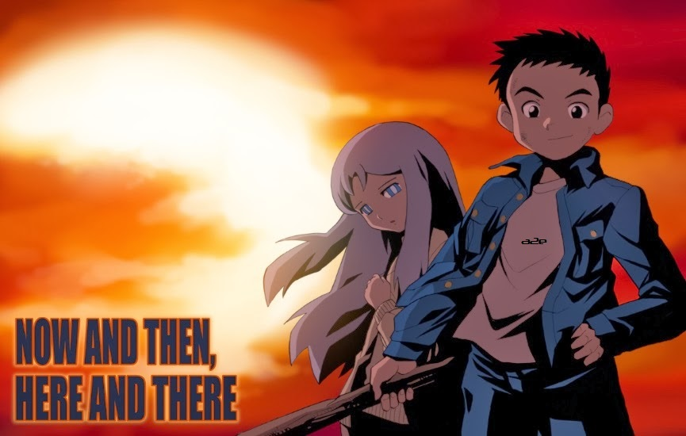
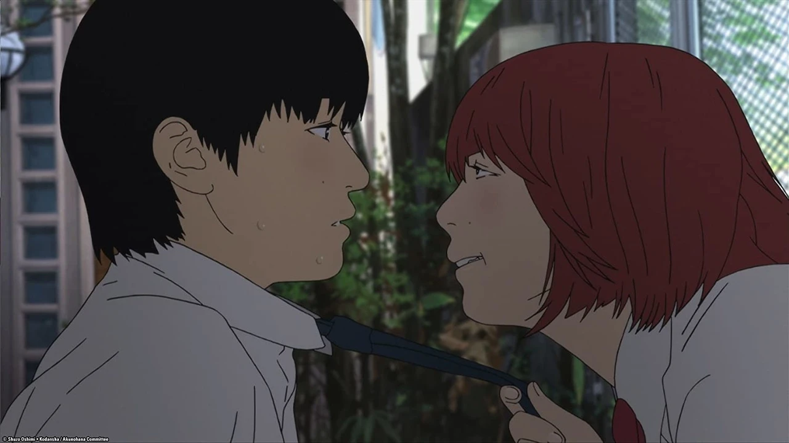
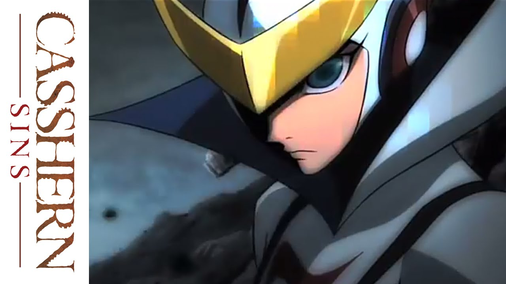
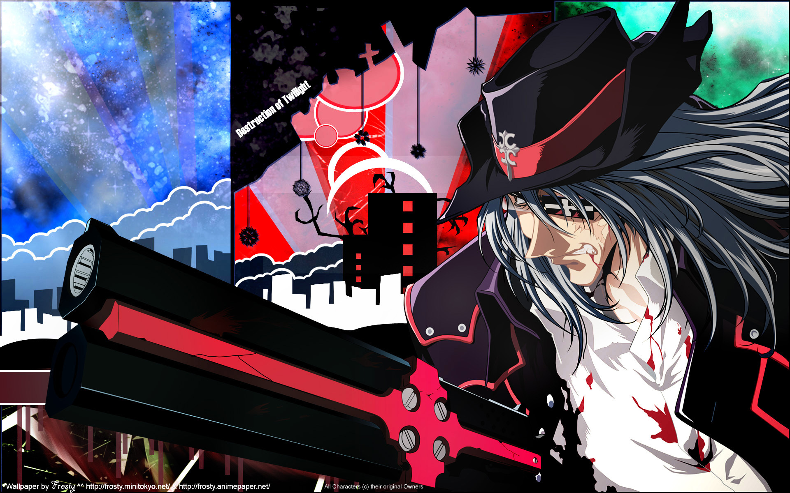
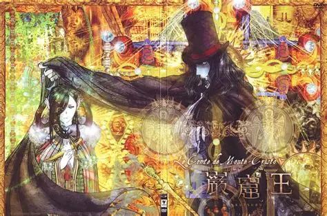
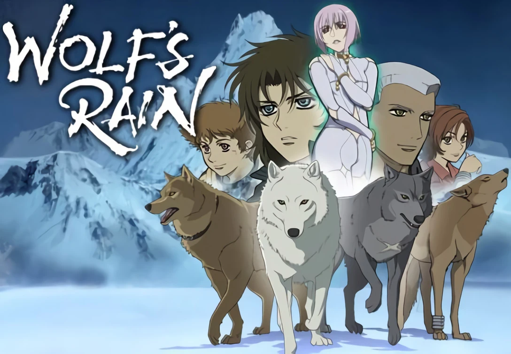

SMASH Senpai
Top 10 Dark Anime That Are Not for Everyone
Dark anime are not made to entertain everyone. They explore emotional collapse, moral decay, trauma, isolation, and the ugliest sides of humanity. These stories are heavy, uncomfortable, and often leave a lasting psychological impact.
This list ranks the Top 10 Dark Anime of All Time — series that push viewers beyond comfort zones through brutal themes, existential despair, and emotional devastation. These anime are not just dark in tone — they are dark in meaning.
Sponsored
#1 Made in Abyss

Made in Abyss disguises unimaginable cruelty beneath a deceptively cute art style. Set in a vast, mysterious chasm known as the Abyss, the story follows children who descend deeper into its layers in search of truth, knowledge, and lost loved ones. What begins as a sense of wonder quickly transforms into one of the darkest journeys anime has ever depicted.
The Abyss itself is the true antagonist. Each layer imposes horrific physical and psychological consequences on those who attempt to return, including madness, bodily mutilation, and death. The deeper the characters descend, the more brutally reality asserts itself. Pain is not sensationalized — it is slow, unavoidable, and permanent.
What makes Made in Abyss especially disturbing is its treatment of innocence. Children endure suffering that no one should witness, let alone experience. Hope exists, but it is fragile, constantly threatened by the world’s indifference. Characters are forced to confront impossible moral choices, often sacrificing pieces of themselves to survive.
Made in Abyss is not horror in the traditional sense. It is existential dread wrapped in fantasy — a reminder that curiosity can be fatal, and some truths demand unbearable prices.

play anime smash or pass here (not sponsored)
SMASH SENPAI – Smash or Pass#2 Rainbow: Nisha Rokubou no Shichinin

Rainbow is raw, unfiltered darkness rooted in human cruelty rather than fantasy. Set in post-war Japan, the series follows a group of teenage boys imprisoned in a brutal reformatory where abuse, humiliation, and despair are daily realities. There are no monsters — only systems that destroy people.
The prison represents a world where power is absolute and mercy nonexistent. Guards exploit inmates physically and psychologically, stripping them of dignity and identity. Every moment is heavy with hopelessness, yet the anime refuses to let suffering become meaningless.
What elevates Rainbow is its focus on brotherhood. Amid relentless abuse, the boys form bonds that become their only source of strength. Survival is not just physical — it is emotional. Trauma leaves lasting scars, shaping their lives long after imprisonment ends.
Rainbow is exhausting, painful, and deeply human. It does not offer easy redemption or comfort. Instead, it confronts viewers with the reality that darkness often comes from institutions meant to protect.
Sponsored
#3 Now and Then, Here and There
Now and Then, Here and There is one of anime’s most emotionally devastating war stories. What begins as a simple isekai premise quickly becomes a relentless depiction of suffering, famine, and moral collapse. The anime strips fantasy of escapism entirely.
Children are forced into roles as soldiers, prisoners, and tools of war. Violence is not glorified — it is ugly, repetitive, and soul-crushing. The series portrays how power corrupts absolutely and how innocence is annihilated under authoritarian rule.
The horror lies in realism. Hunger, exhaustion, sexual violence, and hopelessness are portrayed without restraint. Even acts of kindness feel fragile, constantly threatened by cruelty and despair.
This anime is emotionally brutal. It challenges the viewer’s endurance, forcing reflection on humanity’s capacity for evil. It is not entertainment — it is a confrontation.
#4 Aku no Hana
Aku no Hana is psychological discomfort pushed to its limit. The series explores adolescent obsession, shame, and self-loathing through an unsettling visual style that makes every emotion feel exposed and raw.
The characters are deeply flawed, driven by destructive impulses they barely understand. Relationships are not comforting — they are suffocating, manipulative, and humiliating. The rotoscope animation amplifies unease, making expressions uncanny and movements unnatural.
This anime does not offer moral guidance or relief. Instead, it traps viewers inside the characters’ spiraling thoughts, where desire and self-hatred coexist painfully. Silence becomes oppressive, and small moments feel unbearable.
Aku no Hana is dark because it is honest. It reveals the ugliness people hide within themselves, making it profoundly uncomfortable and unforgettable.
Sponsored
#5 Casshern Sins
Casshern Sins is a melancholic meditation on death, immortality, and regret. Set in a dying world where robots decay and humanity is extinct, the anime follows an immortal being cursed to wander endlessly.
Every encounter reinforces despair. Characters fear death yet long for it, trapped in bodies that rot slowly. Violence feels meaningless, driven by desperation rather than hatred.
The anime’s slow pacing emphasizes loneliness. Silence dominates, forcing viewers to sit with grief and futility. Hope exists, but it is fragile and often fleeting.
Casshern Sins is emotionally heavy, contemplative darkness — a world where survival itself feels like punishment.
#6 Bokurano

Bokurano dismantles the mecha genre through cruelty and inevitability. Children are tasked with piloting a giant robot to protect Earth, but each battle comes with a horrific cost — one life per victory.
There is no escape, no heroic triumph. Every child knows their fate, yet must fight anyway. The anime explores fear, denial, and resignation with brutal honesty.
Rather than focusing on action, Bokurano lingers on personal trauma. Broken families, abuse, and regret define the pilots long before their deaths.
Bokurano is despair weaponized. It is not about saving the world — it is about confronting unavoidable endings.
Sponsored
#7 Gungrave
Gungrave is a tragic crime saga that explores how loyalty and ambition slowly rot into betrayal. At its core, the anime is not about gunfights or supernatural elements, but about two friends whose dreams push them onto opposing paths. Brandon Heat and Harry McDowell begin as brothers in everything but blood, bound by shared hardship and trust.
As they rise through the criminal underworld, ambition becomes the dividing force. Harry’s hunger for power grows insatiable, while Brandon sacrifices his own desires to protect the people he cares about. This imbalance creates an emotional fracture that only widens with time. Every promotion, every victory, comes at the cost of innocence and morality.
The tragedy of Gungrave lies in inevitability. The characters are not evil — they are human, driven by fear, pride, and the desire to escape insignificance. Once betrayal occurs, there is no turning back. Violence feels heavy and mournful, not exciting.
Gungrave is a story about lost brotherhood and irreversible choices. By the end, the anime leaves viewers with grief rather than satisfaction, making it a deeply tragic dark anime experience.
#8 Gankutsuou
Gankutsuou is a tragic reimagining of revenge where justice becomes indistinguishable from cruelty. The Count of Monte Cristo is not portrayed as a righteous avenger, but as a man hollowed out by suffering, whose existence revolves entirely around retribution. His presence alone feels suffocating.
The anime’s unique visual style reflects emotional decay. Ornate patterns and distorted textures create a sense of unreality, emphasizing how revenge warps perception. The Count manipulates lives with surgical precision, drawing former enemies into elaborate traps that ruin not only them, but innocent people caught in between.
What makes Gankutsuou tragic is the cost of obsession. Every act of revenge pushes the Count further away from humanity. Love, forgiveness, and peace are sacrificed in favor of emotional annihilation. Those who trust him are often the ones most deeply harmed.
By the end, victory feels empty. Revenge achieves its goal but destroys everything else. Gankutsuou is not about triumph — it is about the tragedy of a man who survives injustice only to become its echo.
#9 Wolf’s Rain
Wolf’s Rain is a slow, mournful journey through a dying world where hope feels painfully fragile. Set in a frozen, decaying society, the anime follows wolves who disguise themselves as humans while searching for Paradise — a place that may not even exist. From the beginning, the story carries the weight of extinction.
Each character is defined by loss. Companions die, dreams shatter, and survival often feels meaningless. The anime does not rush tragedy — it lets grief linger. Silence, snow-covered landscapes, and haunting music create an atmosphere of quiet despair rather than chaos.
What makes Wolf’s Rain tragic is its emotional sincerity. The wolves continue their journey not because they believe they will succeed, but because stopping would mean surrendering entirely. Even moments of hope feel temporary, almost cruel, as the world continues to collapse around them.
Wolf’s Rain is not about saving the world. It is about choosing to walk forward despite inevitable loss. Its ending leaves viewers emotionally drained, offering beauty without comfort and hope without certainty.
#10 Banana Fish

Banana Fish is a deeply tragic crime drama rooted in trauma, exploitation, and fragile human connection. Set within the violent underworld of New York, the series follows Ash Lynx, a young gang leader shaped by relentless abuse and survival instincts. Violence is constant, but emotional wounds define the story.
Ash’s life is marked by manipulation, loss, and betrayal. Every attempt to escape his past pulls him deeper into danger. The conspiracy surrounding Banana Fish becomes both a literal threat and a symbol of how power dehumanizes the vulnerable.
At the heart of the anime is Ash’s bond with Eiji. Their relationship offers rare moments of warmth in an otherwise merciless world. Yet even this connection is fragile, constantly threatened by circumstance, distance, and cruelty beyond their control.
Banana Fish is tragic because it refuses easy healing. Survival does not equal freedom, and love does not guarantee safety. The ending leaves lasting emotional scars, making the series one of anime’s most heartbreaking dark stories.
Feeling Brave?
Think you can handle more chaos? Play Smash or Pass on SMASH Senpai.
PLAY SMASH OR PASS